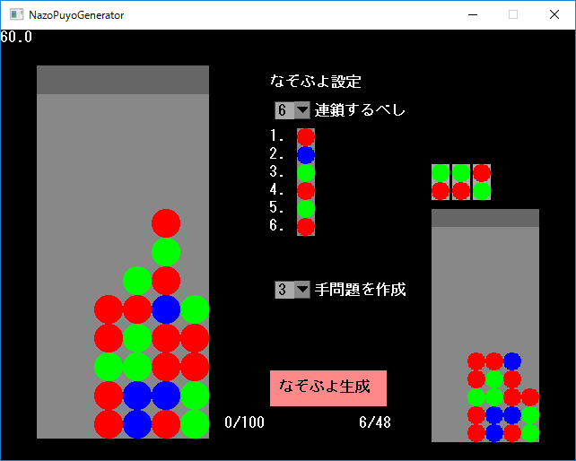

・説明 クソなぞぷよ生成機です。良問を生成する可能性もあります（）。 4個消しお邪魔無しの連鎖問題を生成します。 ぷよ譜の確認にはIPSさんの連鎖シミュレータを使わせて頂いております。 ・使い方 １．連鎖数と手数を指定する ２．消える色を指定する（ぷよをクリックで色変更） ３．なぞぷよ生成ボタンを押す（ブラウザでぷよ譜が開かれます） ・その他 細かい調整がしたい人用コマンド [C] なぞぷよ生成（ブラウザ開かない） [←][→] 連鎖型の選択 [T] 選択された連鎖型から取り除く手を生成 [P][N] 取り除く手の選択 [U] なぞぷよ出力 ・ダウンロード Download